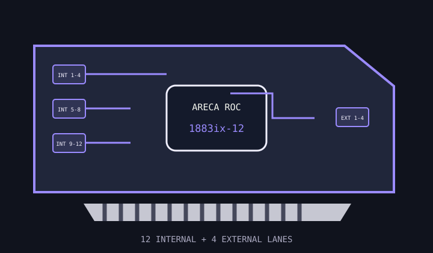

[ INDIVIDUAL COMPONENT // STORAGE / DISK I/O ]
Areca ARC-1883ix-12
A SAS 12 Gb/s hardware RAID adapter with twelve internal and four external storage lanes and a cache DIMM socket.

MODEL SCOPE: ARC-1883ix-12. Check board revision, cache DIMM type/capacity, cache backup module, bracket and exact firmware package.
Reference specifications
| Controller | Areca dual-core RAID-on-Chip controller, 1.2 GHz family specification. |
|---|---|
| Host bus | PCI Express 3.0 x8. |
| Ports | Twelve internal lanes via three SFF-8643 connectors and four external lanes via one SFF-8644 connector. |
| Protocols | SAS 12 Gb/s and SATA 6 Gb/s; lower SAS generations are supported by link negotiation. |
| RAID / HBA mode | Hardware RAID 0, 1, 1E, 3, 5, 6, 10, 30, 50 and 60, plus single-disk/JBOD modes as supported by firmware. |
| Cache / protection | 2 GB DDR3 ECC cache as configured; DIMM capacity options and compatibility are model-specific. Optional flash-based backup module supports supercapacitor or battery protection. |
| Firmware / OS | Use Areca ARC-1883-series firmware and management software supported for the target Windows, Linux, FreeBSD, Solaris, macOS or VMware release; confirm the exact release matrix. |
| Drive / backplane caveats | Separate internal/external cable paths and match SFF-8643/8644 cabling to the enclosure. Expander, SES2/SGPIO, drive-sector format and cache DIMM compatibility must be checked. |
Compatibility and service notes
- Cache backup is an optional module and must be healthy before relying on protected write-back; check the card's management status.
- Do not substitute arbitrary registered/unbuffered ECC DIMMs; use only Areca-approved cache modules for the controller revision.
- Use matched external SAS cables and a powered enclosure; connector shape alone does not guarantee a compatible lane map.
Sources & further reading
- Areca — ARC-1883 SAS RAID adapter familyManufacturer specifications and operating-system support for the 1883 family.
- Areca — ARC-1883 adapter specificationOfficial technical reference for interfaces, cache, RAID functions and form factor.
- Areca — ARC-1883 / ARC-1884 installation guideManufacturer installation, cabling and service instructions.